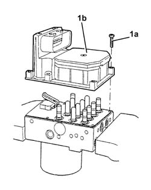
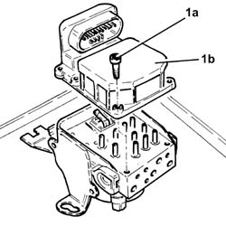

3340A20 abs electronic control unit - r+r
- Path
- Procedures > 33 BRAKING SYSTEM > 3340 A(B.S. ANTI-LOCK BRAKING SYSTEM .) > 3340A abs check/adjustment devices > 3340A20 abs electronic control unit - r+r
- Kind
- repair procedure (removal / refitting; the operation number is the code)
- Applies to
- all engines; all production periods
- Interactive page
- https://sloeber94.github.io/elrnDB-a156/en/#/3238093
Applies to: all engines; all production periods
 Removing
Removing
 Refitting
RefittingProceed with the removal 5530B10 battery - r+r .
Proceed with the removal 3340A12 A'B.S. system. - electronic and hydraulic CONTROL UNIT R.R. .
1. At the bench, undo the bolts (1a) and separate ABS electronic control unt (1b) from the hydraulic assembly.

Applies to: all engines; all production periods
Refitting
RemovingRefit the ABS electronic control unit to the hydraulic assembly and tighten the retaining bolts.
Proceed with the refitting 3340A12 A'B.S. system. - electronic and hydraulic CONTROL UNIT R.R. .
Proceed with the refitting 3330A14 HYDRAULIC BRAKING SYSTEM - Bleed air .
Proceed with the refitting 5530B10 battery - r+r .
Applies to: all engines; production: da 03/02 a 09/03, da 10/03
Removing
RefittingProceed with the removal 5530B10 battery - r+r .
Proceed with the removal 5530B52 Battery DRIP TRAY/SUPPORT - R.R. .
Proceed with the removal 3340A12 A'B.S. system. - electronic and hydraulic CONTROL UNIT R.R. .
1. Undo the bolts (1a) and separate the A.B.S. electronic control unit (1b) from the hydraulic assembly.

Applies to: all engines; production: da 03/02 a 09/03, da 10/03
Refitting
RemovingRefit the ABS electronic control unit to the hydraulic assembly and tighten the retaining bolts.
Proceed with the refitting 3340A12 A'B.S. system. - electronic and hydraulic CONTROL UNIT R.R. .
Proceed with the refitting 5530B52 Battery DRIP TRAY/SUPPORT - R.R. .
Proceed with the refitting 5530B10 battery - r+r .
Bleed the air from the braking system 3330A14 HYDRAULIC BRAKING SYSTEM - Bleed air .